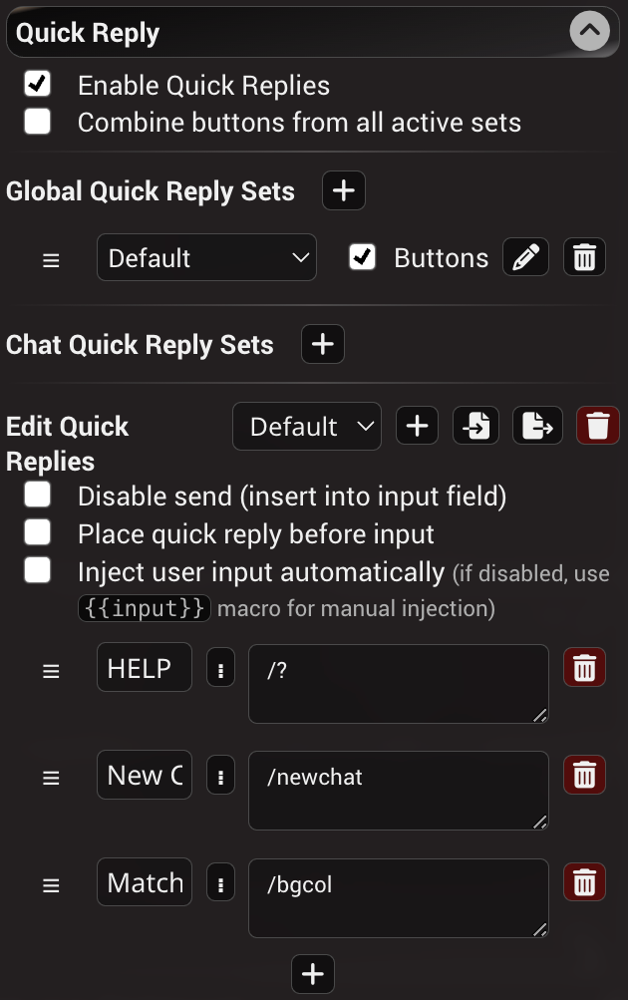

STscript 语言参考
什么是 STscript？
STscript 是一种简单而强大的脚本语言，无需编写复杂代码即可扩展 SillyTavern 的功能，让你能够：
- 创建小游戏或速通挑战
- 构建 AI 驱动的聊天洞察
- 释放你的创造力并与他人分享
STscript 基于斜杠命令引擎构建，利用命令批处理、数据管道、宏和变量。这些概念将在以下文档中详细介绍。
安全注意事项
能力越大，责任越大。请谨慎操作，执行脚本前务必仔细检查其内容。
Hello, World!
要运行你的第一个脚本，打开任意 SillyTavern 聊天，在聊天输入栏中输入以下内容：
/pass Hello, World! | /echo你应该会在屏幕顶部看到一条弹出消息。现在让我们逐步分析它。
脚本是一批命令的集合，每条命令以斜杠开头，可带有或不带有具名参数和匿名参数，并以命令分隔符 | 结尾。
命令按顺序依次执行，并在彼此之间传递数据。
/pass命令接受常量值 "Hello, World!" 作为匿名参数，并将其写入管道。/echo命令通过管道从上一条命令接收值，并以弹出通知的形式显示它。
**提示：**要查看所有可用命令的列表，请在聊天中输入 /help slash。
由于常量匿名参数与管道可以互换，我们可以将这个脚本简写为：
/echo Hello, World!用户输入
现在让我们为脚本添加一点交互性。我们将接受用户的输入值并在通知中显示它。
/input Enter your name |
/echo Hello, my name is {{pipe}}/input命令用于显示一个输入框，其提示文字由匿名参数指定，然后将输出写入管道。- 因为
/echo已经有一个设置输出模板的匿名参数，我们使用{{pipe}}宏来指定管道值将被渲染的位置。
其他输入/输出命令
/popup (text)— 显示一个阻塞弹窗，支持精简 HTML 格式，例如：/popup <font color=red>I'm red!</font>。/setinput (text)— 用提供的文本替换用户输入栏的内容。/speak voice="name" (text)— 使用所选 TTS 引擎和语音映射中的角色名称朗读文本，例如/speak name="Donald Duck" Quack!。/buttons labels=["a","b"] (text)— 显示一个带有指定文本和按钮标签的阻塞弹窗。labels必须是 JSON 序列化的字符串数组或包含此类数组的变量名。返回被点击的按钮标签到管道，若取消则返回空字符串。文本支持精简 HTML 格式。/beep— 播放消息通知音效。
/popup 和 /input 的参数
/popup 和 /input 支持以下附加具名参数：
large=on/off- 增加弹窗的垂直尺寸。默认值：off。wide=on/off- 增加弹窗的水平尺寸。默认值：off。okButton=string- 支持自定义"确定"按钮上的文字。默认值：Ok。rows=number- （仅适用于/input）增加输入控件的尺寸。默认值：1。placeholder=string- 设置输入框中的占位文本。tooltip=string- 设置悬停时显示的工具提示。icon=string- 为弹窗设置 Font Awesome 图标类。
示例：
/popup large=on wide=on okButton="Accept" Please accept our terms and conditions..../echo 的参数
/echo 支持附加的 severity 参数，用于设置显示消息的样式，可取以下值：
warningerrorinfo（默认）success
示例：
/echo severity=error Something really bad happened.变量
变量用于在脚本中存储和操作数据，可通过命令或宏来使用。变量分为以下类型：
- 局部变量 — 保存到当前聊天的元数据中，仅对该聊天有效。
- 全局变量 — 保存到 settings.json 中，在整个应用中都存在。
/getvar name或{{getvar::name}}— 获取局部变量的值。/setvar key=name value或{{setvar::name::value}}— 设置局部变量的值。/addvar key=name increment或{{addvar::name::increment}}— 将increment加到局部变量的值上。/incvar name或{{incvar::name}}— 将局部变量的值增加 1。/decvar name或{{decvar::name}}— 将局部变量的值减少 1。/getglobalvar name或{{getglobalvar::name}}— 获取全局变量的值。/setglobalvar key=name或{{setglobalvar::name::value}}— 设置全局变量的值。/addglobalvar key=name或{{addglobalvar::name:increment}}— 将increment加到全局变量的值上。/incglobalvar name或{{incglobalvar::name}}— 将全局变量的值增加 1。/decglobalvar name或{{decglobalvar::name}}— 将全局变量的值减少 1。/flushvar name— 删除局部变量的值。/flushglobalvar name— 删除全局变量的值。
- 未定义变量的默认值为空字符串，或者当它首次在
/addvar、/incvar、/decvar命令中使用时默认为零。 /addvar命令中的增量，若增量和变量值都能转换为数字则执行加减运算，否则进行字符串拼接。- 若命令参数接受变量名，且同名的局部变量和全局变量都存在，则局部变量优先。
- 所有用于变量操作的斜杠命令都会将结果值写入管道，供下一条命令使用。
- 对于宏，只有"get"、"inc"和"dec"类型的宏会返回值，"add"和"set"则被替换为空字符串。
现在，让我们看一下以下示例：
/input What do you want to generate? |
/setvar key=SDinput |
/echo Requesting an image of {{getvar::SDinput}} |
/getvar SDinput |
/imagine- 用户输入的值被保存到名为
SDinput的局部变量中。 getvar宏用于在/echo命令中显示该值。getvar命令用于检索变量的值并通过管道传递。- 该值被传递给
/imagine命令（由图像生成插件提供），作为其输入提示词。
由于变量在脚本执行之间会被保存而不会被清除，你可以在其他脚本中以及通过宏引用该变量，它将解析为示例脚本执行期间的相同值。若要确保值被丢弃，请在脚本中添加 /flushvar 命令。
数组和对象
变量值可以包含 JSON 序列化的数组或键值对（对象）。
示例：
- 数组：
["apple","banana","orange"] - 对象：
{"fruits":["apple","banana","orange"]}
可以对命令应用以下修改来操作这些变量：
/len命令获取数组中的项目数量。index=number/string具名参数可以添加到/getvar或/setvar及其全局对应命令中，通过数组的从零开始的索引或对象的字符串键来获取或设置子值。- 若对不存在的变量使用数字索引，该变量将被创建为空数组
[]。 - 若对不存在的变量使用字符串索引，该变量将被创建为空对象
{}。
- 若对不存在的变量使用数字索引，该变量将被创建为空数组
/addvar和/addglobalvar命令支持向数组类型的变量推入新值。
流程控制 - 条件判断
你可以使用 /if 命令创建条件表达式，根据定义的规则分支执行。
/if left=valueA right=valueB rule=comparison else={: /echo (command on false) :} {: /echo (command on true) :}注意，以下语法：
/if left=valueA right=valueB rule=comparison else="(command on false)" "(command on true)"也是支持的，但使用 {: 闭包 :} 能帮助你编写更整洁的脚本。
让我们看一下以下示例：
/input What's your favorite drink? |
/if left={{pipe}} right="black tea" rule=eq else={: /echo You shall not pass | /abort :} {: /echo Welcome to the club, {{user}} :}这个脚本将用户输入与一个必需值进行比较，并根据输入值显示不同的消息。
/if 的参数
left是第一个操作数，我们称之为 A。right是第二个操作数，我们称之为 B。rule是应用于操作数的运算。else是可选的子命令字符串，当布尔比较结果为假时执行。- 匿名参数是当布尔比较结果为真时要执行的子命令。
操作数值按以下顺序求值：
- 数字字面量
- 局部变量名
- 全局变量名
- 字符串字面量
具名参数的字符串值可以用引号括起来以允许多词字符串，引号随后会被丢弃。
布尔运算
支持的布尔比较规则如下。对操作数应用运算后得到真或假的结果。
eq（等于）=> A = Bneq（不等于）=> A != Blt（小于）=> A < Bgt（大于）=> A > Blte（小于或等于）=> A <= Bgte（大于或等于）=> A >= Bnot（一元取反）=> !Ain（包含子串）=> A 包含 B，不区分大小写nin（不包含子串）=> A 不包含 B，不区分大小写
子命令
子命令是包含一系列斜杠命令的字符串。
- 要在子命令中使用命令批处理，命令分隔符应被转义（见下文）。
- 由于宏值在进入条件判断时就被执行，而非在子命令执行时，宏可以额外被转义以延迟其求值到子命令执行时。
- 子命令执行的结果会通过管道传递给
/if之后的命令。 /abort命令在遇到时会中断脚本执行。
/if 命令可以用作三元运算符。
以下示例将在变量 a 等于 5 时向下一条命令传递字符串 "true"，否则传递 "false"。
/if left=a right=5 rule=eq else={: /pass false:} {: /pass true :} |
/echo转义序列
宏
宏的转义方式与之前相同。但使用闭包后，你需要转义宏的频率会大大降低。可以只转义两个开头的花括号，也可以同时转义开头和结尾的括号对。
/echo \{\{char}} |
/echo \{\{char\}\}管道
在闭包中，管道不需要转义（作为命令分隔符使用时）。在其他所有需要使用字面管道字符而非命令分隔符的地方，都需要对其进行转义。
/echo title="a\|b" c\|d |
/echo title=a\|b c\|d |使用解析器标志 STRICT_ESCAPING 后，引号中的管道无需转义。
/parser-flag STRICT_ESCAPING |
/echo title="a|b" c\|d |
/echo title=a\|b c\|d |引号
要在引号值内使用字面引号字符，该字符必须被转义。
/echo title="a \"b\" c" d "e" f空格
要在具名参数的值中使用空格，你需要将值用引号括起来，或者对空格字符进行转义。
/echo title="a b" c d |
/echo title=a\ b c d闭包定界符
如果要使用标记闭包开头或结尾的字符组合，必须用单个反斜杠对序列进行转义。
/echo \{: |
/echo \:}管道断路器
||为了防止上一条命令的输出被自动注入为下一条命令的匿名参数，请在两条命令之间放置双管道符。
/echo we don't want to pass this on ||
/world闭包
{: ... :}闭包（块语句、lambda、匿名函数，随你怎么称呼）是一系列包裹在 {: 和 :} 之间的命令，只有在代码的那部分被执行时才会被求值。
子命令
闭包使子命令的使用更加简便，无需转义管道和宏。
// if without closures |
/if left=1 rule=eq right=1
else="
/echo not equal \|
/return 0
"
/echo equal \|
/return \{\{pipe}}// if with closures |
/if left=1 rule=eq right=1
else={:
/echo not equal |
/return 0
:}
{:
/echo equal |
/return {{pipe}}
:}作用域
闭包拥有自己的作用域并支持作用域变量。作用域变量使用 /let 声明，使用 /var 设置和获取其值。获取作用域变量的另一种方式是 {{var::}} 宏。
/let x |
/let y 2 |
/var x 1 |
/var y |
/echo x is {{var::x}} and y is {{pipe}}.在闭包内，你可以访问在该闭包或其任一祖先中声明的所有变量。你无法访问在闭包的后代中声明的变量。
若某个变量与闭包某个祖先中声明的变量同名，则在该闭包及其后代中无法访问祖先的变量。
/let x this is root x |
/let y this is root y |
/return {:
/echo called from level-1: x is "{{var::x}}" and y is "{{var::y}}" |
/delay 500 |
/let x this is level-1 x |
/echo called from level-1: x is "{{var::x}}" and y is "{{var::y}}" |
/delay 500 |
/return {:
/echo called from level-2: x is "{{var::x}}" and y is "{{var::y}}" |
/let x this is level-2 x |
/echo called from level-2: x is "{{var::x}}" and y is "{{var::y}}" |
/delay 500
:}()
:}() |
/echo called from root: x is "{{var::x}}" and y is "{{var::y}}"具名闭包
/let x {: ... :} | /:x闭包可以被赋值给变量（仅限作用域变量），以便在稍后调用或作为子命令使用。
/let myClosure {:
/echo this is my closure
:} |
/:myClosure/let myClosure {:
/echo this is my closure |
/delay 500
:} |
/times 3 {{var::myClosure}}/: 也可以用于执行快速回复，它只是 /run 的简写形式。
/:QrSetName.QrButtonLabel |
/run QrSetName.QrButtonLabel闭包参数
具名闭包可以接受具名参数，就像斜杠命令一样。参数可以有默认值。
/let myClosure {: a=1 b=
/echo a is {{var::a}} and b is {{var::b}}
:} |
/:myClosure b=10闭包与管道参数
来自父闭包的管道值不会被自动注入到子闭包的第一条命令中。
你仍然可以通过 {{pipe}} 显式引用父闭包的管道值，但如果闭包内第一条命令的匿名参数留空，该值将不会被自动注入。
/* This used to attempt to change the model to "foo"
because the value "foo" from the /echo outside of
the loop was injected into the /model command
inside of the loop.
Now it will simply echo the current model without
attempting to change it.
*|
/echo foo |
/times 2 {:
/model |
/echo |
:} |/* You can still recreate the old behavior by
explicitly using the {{pipe}} macro.
*|
/echo foo |
/times 2 {:
/model {{pipe}} |
/echo |
:} |立即执行闭包
{: ... :}()闭包可以立即执行，这意味着它们将被替换为其返回值。这在没有显式闭包支持的地方非常有用，也能简化一些原本需要大量中间变量的命令。
// a simple length comparison of two strings without closures |
/len foo |
/var lenOfFoo {{pipe}} |
/len bar |
/var lenOfBar {{pipe}} |
/if left={{var::lenOfFoo}} rule=eq right={{var:lenOfBar}} /echo yay!// the same comparison with immediately executed closures |
/if left={:/len foo:}() rule=eq right={:/len bar:}() /echo yay!除了运行保存在作用域变量中的具名闭包外，/run 命令也可以用于立即执行闭包。
/run {:
/add 1 2 3 4 |
:} |
/echo |注释
// ... | /# ...注释是脚本代码中供人阅读的解释或标注。注释不会中断管道。
// this is a comment |
/echo foo |
/# this is also a comment块注释
块注释可用于快速注释掉多条命令。它们不会在管道处终止。
/echo foo |
/*
/echo bar |
/echo foobar |
*|
/echo foo again |流程控制
循环：/while 和 /times
如果需要循环运行某些命令直到满足特定条件，请使用 /while 命令。
/while left=valueA right=valueB rule=operation guard=on "commands"循环的每一步都会将变量 A 的值与变量 B 的值进行比较，若条件为真则执行引号中的任意有效斜杠命令，否则退出循环。此命令不向输出管道写入任何内容。
/while 的参数
可用的布尔比较集合、变量处理、字面值和子命令与 /if 命令相同。
可选的 guard 具名参数（默认为 on）用于防止无限循环，将迭代次数限制为 100 次。
若要禁用保护并允许无限循环，请设置 guard=off。
以下示例将 i 的值每次加 1 直到达到 10，然后输出结果值（本例中为 10）。
/setvar key=i 0 |
/while left=i right=10 rule=lt "/addvar key=i 1" |
/echo {{getvar::i}} |
/flushvar i/times 的参数
以指定次数运行子命令。
/times (repeats) "(command)" — 将引号中的任意有效斜杠命令重复指定次数，例如 /setvar key=i 1 | /times 5 "/addvar key=i 1" 将 "i" 的值加 1，共 5 次。
{{timesIndex}}将被替换为迭代编号（从零开始），例如/times 4 {:/echo {{timesIndex}}:}将依次输出数字 0 到 3。- 循环默认限制为 100 次迭代，传入
guard=off可禁用限制。
跳出循环和闭包
/break |/break 命令可用于提前跳出循环（/while 或 /times）或闭包。/break 的匿名参数可用于传递不同于当前管道的值。
/break 目前在以下命令中实现：
/while- 提前退出循环/times- 提前退出循环/run（使用闭包或通过变量引用的闭包）- 提前退出闭包/:（使用闭包）- 提前退出闭包
/times 10 {:
/echo {{timesIndex}}
/delay 500 |
/if left={{timesIndex}} rule=gt right=3 {:
/break
:} |
:} |/let x {: iterations=2
/if left={{var::iterations}} rule=gt right=10 {:
/break too many iterations! |
:} |
/times {{var::iterations}} {:
/delay 500 |
/echo {{timesIndex}} |
:} |
:} |
/:x iterations=30 |
/echo the final result is: {{pipe}}/run {:
/break 1 |
/pass 2 |
:} |
/echo pipe will be one: {{pipe}} |/let x {:
/break 1 |
/pass 2 |
:} |
/:x |
/echo pipe will be one: {{pipe}} |数学运算
- 以下所有运算都接受一系列数字或变量名，并将结果输出到管道。
- 无效运算（如除以零）以及结果为 NaN 或无穷大的运算将返回零。
- 乘法、加法、最小值和最大值接受以空格分隔的无限数量的参数。
- 减法、除法、幂运算和取模接受以空格分隔的两个参数。
- 正弦、余弦、自然对数、平方根、绝对值和取整接受一个参数。
运算列表：
/add (a b c d)— 对一组值执行加法，例如/add 10 i 30 j/mul (a b c d)— 对一组值执行乘法，例如/mul 10 i 30 j/max (a b c d)— 返回一组值中的最大值，例如/max 1 0 4 k/min (a b c d)— 返回一组值中的最小值，例如/min 5 4 i 2/sub (a b)— 对两个值执行减法，例如/sub i 5/div (a b)— 对两个值执行除法，例如/div 10 i/mod (a b)— 对两个值执行取模运算，例如/mod i 2/pow (a b)— 对两个值执行幂运算，例如/pow i 2/sin (a)— 对一个值执行正弦运算，例如/sin i/cos (a)— 对一个值执行余弦运算，例如/cos i/log (a)— 对一个值执行自然对数运算，例如/log i/abs (a)— 对一个值执行绝对值运算，例如/abs -10/sqrt (a)— 对一个值执行平方根运算，例如/sqrt 9/round (a)— 对一个值执行四舍五入到最近整数的运算，例如/round 3.14/rand (round=round|ceil|floor from=number=0 to=number=1)— 返回 from 和 to 之间的随机数，例如/rand或/rand 10或/rand from=5 to=10。范围为闭区间。返回值将包含小数部分。使用round具名参数可获取整数值，例如/rand round=ceil向上取整，round=floor向下取整，round=round四舍五入。
示例 1：计算半径为 50 的圆的面积
/setglobalvar key=PI 3.1415 |
/setvar key=r 50 |
/mul r r PI |
/round |
/echo Circle area: {{pipe}}示例 2：计算 5 的阶乘
/setvar key=input 5 |
/setvar key=i 1 |
/setvar key=product 1 |
/while left=i right=input rule=lte "/mul product i \| /setvar key=product \| /addvar key=i 1" |
/getvar product |
/echo Factorial of {{getvar::input}}: {{pipe}} |
/flushvar input |
/flushvar i |
/flushvar product使用大语言模型
脚本可以使用以下命令向当前连接的大语言模型 API 发送请求：
/gen (prompt)— 使用提供的提示词为所选角色生成文本，并包含聊天消息。/genraw (prompt)— 仅使用提供的提示词生成文本，忽略当前角色和聊天。/trigger— 触发一次普通生成（等同于点击"发送"按钮）。在群聊中，可以选择提供从 1 开始的群成员索引或角色名称让其回复，否则将根据群组设置触发群组轮次。/swipe— 对最后一条角色消息触发滑动。/regenerate— 重新生成最后一条角色消息。/continue— 尝试续写最后一条消息。
/gen 和 /genraw 的参数
/genraw lock=on/off stop=[] instruct=on/off (prompt)lock— 可以是on或off。指定在生成过程中是否应阻止用户输入。默认值：off。stop— JSON 序列化的字符串数组。仅针对本次生成添加自定义停止字符串（如果 API 支持）。默认值：无。instruct（仅适用于/genraw）— 可以是on或off。允许对输入提示词使用指令格式（如果启用了指令模式且 API 支持）。设置为off可强制使用纯提示词。默认值：on。as（用于文本补全 API）— 可以是system（默认）或char。定义最后一行提示词的格式化方式。char将使用角色名称，system将不使用名称或使用中性名称。
生成的文本随后通过管道传递给下一条命令，可以保存到变量或使用输入/输出功能显示：
/genraw Write a funny message from Cthulhu about taking over the world. Use emojis. |
/popup <h3>Cthulhu says:</h3><div>{{pipe}}</div>或者将生成的消息作为角色的回复插入：
/genraw You have been memory wiped, your name is now Lisa and you're tearing me apart. You're tearing me apart Lisa! |
/sendas name={{char}} {{pipe}}临时角色
如果不在群聊中，脚本可以临时以不同角色的身份向当前连接的大语言模型发送请求。
/ask (prompt)— 使用提供的提示词为指定角色生成文本，并包含聊天消息。请注意，对该角色回复的滑动操作将恢复为当前角色。
/ask name=... (prompt)/ask 的参数
name— 必填。要询问的角色名称（或唯一的角色标识符，如头像键）。必须作为具名参数提供。return— 指定返回值的提供方式。默认为pipe（通过命令管道输出）。如果 API 支持，可以指定其他选项。
/ask name=Alice What is your favorite color?提示词注入
脚本可以添加自定义的大语言模型提示词注入，本质上相当于无限量的作者注释。
/inject (text)— 向当前聊天的普通大语言模型提示词插入任意文本，需要一个唯一标识符。保存到聊天元数据。/listinjects— 在系统消息中显示当前聊天中由脚本添加的所有提示词注入列表。/flushinjects— 删除当前聊天中由脚本添加的所有提示词注入。/note (text)— 设置当前聊天的作者注释值。保存到聊天元数据。/interval— 设置当前聊天的作者注释插入间隔。/depth— 设置聊天内位置的作者注释插入深度。/position— 设置当前聊天的作者注释位置。
/inject 的参数
/inject id=IdGoesHere position=chat depth=4 My prompt injectionid— 标识符字符串或变量引用。使用相同 ID 连续调用/inject将覆盖之前的文本注入。必填参数。position— 设置注入位置。默认值：after。可选值：after：在主提示词之后。before：在主提示词之前。chat：聊天内。
depth— 设置聊天内位置的注入深度。0 表示在最后一条消息之后插入，1 表示在最后一条消息之前插入，以此类推。默认值：4。- 匿名参数是要注入的文本。空字符串将取消所提供标识符的之前的值。
访问聊天消息
读取消息
你可以使用 /messages 命令访问当前选中聊天中的消息。
/messages names=on/off start-finishnames参数用于指定是否包含角色名称，默认值：on。- 在匿名参数中，它接受消息索引或
start-finish格式的范围。范围为闭区间！ - 如果范围不可满足（即无效索引或请求的消息数量超过实际数量），则返回空字符串。
- 从提示词中隐藏的消息（以幽灵图标标注）将从输出中排除。
- 若要获取最新消息的索引，请使用
{{lastMessageId}}宏，而{{lastMessage}}将获取消息本身。
若要计算范围的起始索引，例如需要获取最后 N 条消息时，可以使用变量减法。 以下示例将获取聊天中的最后 3 条消息：
/setvar key=start {{lastMessageId}} |
/addvar key=start -2 |
/messages names=off {{getvar::start}}-{{lastMessageId}} |
/setinput发送消息
脚本可以以用户、角色、角色扮演者、中立旁白者的身份发送消息，也可以添加注释。
/send (text)— 以当前选中的角色扮演者身份添加消息。/sendas name=charname (text)— 以任意角色的身份添加消息，通过名称匹配。name参数为必填。使用{{char}}宏以当前角色身份发送。/sys (text)— 添加来自不属于用户或角色的中立旁白者的消息。显示的名称纯粹是装饰性的，可以使用/sysname命令自定义。/comment (text)— 添加一条显示在聊天中但对提示词不可见的隐藏注释。/addswipe (text)— 向最后一条角色消息添加滑动选项。不能向用户消息或隐藏消息添加滑动选项。/hide (message id or range)— 根据提供的消息索引或start-finish格式的闭区间范围，将一条或多条消息从提示词中隐藏。/unhide (message id or range)— 根据提供的消息索引或start-finish格式的闭区间范围，将一条或多条消息恢复到提示词中。
/send、/sendas、/sys 和 /comment 命令可选接受具名参数 at，其值为从零开始的数字（或包含此类值的变量名），用于指定消息插入的确切位置。默认情况下，新消息插入到聊天记录的末尾。
以下命令将在对话历史的开头插入一条用户消息：
/send at=0 Hi, I use Linux.删除消息
以下命令具有潜在破坏性且没有"撤销"功能。如果你不小心删除了重要内容，请检查 /backups/ 文件夹。
/cut (message id or range)— 根据提供的消息索引或start-finish格式的闭区间范围，从聊天中剪切一条或多条消息。/del (number)— 从聊天中删除最后 N 条消息。/delswipe (1-based swipe id)— 根据提供的从 1 开始的滑动 ID，从最后一条角色消息中删除一个滑动选项。/delname (character name)— 删除当前聊天中属于指定名称角色的所有消息。/delchat— 删除当前聊天。
角色管理命令
/char-create— 使用具名参数提供的数据创建新角色。/char-update— 使用具名参数提供的数据更新当前角色。/char-get— 以 JSON 对象形式检索当前角色的数据并传递到管道。/char-delete (name)— 删除具有指定名称的角色。/char-duplicate (name)— 复制具有指定名称的角色。/tag-import (name)— 从角色卡文件导入标签。
加载器命令
加载器系统提供了一个可复用的覆盖层，用于耗时任务，可提供视觉反馈和/或临时阻止 UI 操作。
/loader-show (text)— 显示带有指定文本的加载覆盖层。/loader-hide— 隐藏加载覆盖层。/loader-wrap (closure)— 显示加载覆盖层，执行提供的闭包，并在完成后隐藏覆盖层。/loader-stop— 停止并移除加载覆盖层。
世界信息命令
世界信息（也称为 Lorebook）是一个高度实用的工具，用于将数据动态插入提示词。有关更详细的说明，请参阅专属页面：世界信息。
/getchatbook— 获取与聊天绑定的世界信息文件的名称，若未绑定则创建一个新文件，并将其传递到管道。/findentry file=bookName field=fieldName [text]— 使用提供文本对字段值进行模糊匹配，在指定文件（或指向文件名的变量）中查找记录的 UID（默认字段：key），并将 UID 传递到管道，例如/findentry file=chatLore field=key Shadowfang。/getentryfield file=bookName field=field [UID]— 从指定世界信息文件（或指向文件名的变量）中获取具有该 UID 的记录的字段值（默认字段：content），并将值传递到管道，例如/getentryfield file=chatLore field=content 123。/setentryfield file=bookName uid=UID field=field [text]— 设置指定世界信息文件（或指向文件名的变量）中具有该 UID（或指向 UID 的变量）的记录的字段值（默认字段：content）。若要为关键字字段设置多个值，请使用逗号分隔的列表作为文本值，例如/setentryfield file=chatLore uid=123 field=key Shadowfang,sword,weapon。/createentry file=bookName key=keyValue [content text]— 在指定文件（或指向文件名的变量）中创建一条新记录，带有关键字和内容（这两个参数均为可选），并将 UID 传递到管道，例如/createentry file=chatLore key=Shadowfang The sword of the king。
有效的条目字段
逻辑值
- 0 = AND ANY（任一）
- 1 = NOT ALL（非全部）
- 2 = NOT ANY（非任一）
- 3 = AND ALL（全部）
位置值
- 0 = 在主提示词之前
- 1 = 在主提示词之后
- 2 = 作者注释顶部
- 3 = 作者注释底部
- 4 = 聊天内指定深度
- 5 = 示例消息顶部
- 6 = 示例消息底部
角色值（仅位置 = 4）
- 0 = 系统
- 1 = 用户
- 2 = 助手
示例 1：通过关键字从聊天 Lorebook 读取内容
/getchatbook | /setvar key=chatLore |
/findentry file={{getvar::chatLore}} field=key Shadowfang |
/getentryfield file={{getvar::chatLore}} field=key |
/echo示例 2：创建带有关键字和内容的聊天 Lorebook 条目
/getchatbook | /setvar key=chatLore |
/createentry file={{getvar::chatLore}} key="Milla" Milla Basset is a friend of Lilac and Carol. She is a hush basset puppy who possesses the power of alchemy. |
/echo示例 3：用聊天中的新信息扩展现有 Lorebook 条目
/getchatbook | /setvar key=chatLore |
/findentry file={{getvar::chatLore}} field=key Milla |
/setvar key=millaUid |
/getentryfield file={{getvar::chatLore}} field=content |
/setvar key=millaContent |
/gen lock=on Tell me more about Milla Basset based on the provided conversation history. Incorporate existing information into your reply: {{getvar::millaContent}} |
/setvar key=millaContent |
/echo New content: {{pipe}} |
/setentryfield file={{getvar::chatLore}} uid=millaUid field=content {{getvar::millaContent}}文本处理
在各种脚本场景中，有许多实用的文本处理工具命令可供使用。
/trimtokens— 从开头或末尾将输入修剪到指定数量的文本标记，并将结果输出到管道。/trimstart— 将输入修剪到第一个完整句子的开头，并将结果输出到管道。/trimend— 将输入修剪到最后一个完整句子的末尾，并将结果输出到管道。/fuzzy— 对输入文本和字符串列表执行模糊匹配，将最佳匹配字符串输出到管道。/regex name=scriptName [text]— 为指定文本执行正则表达式扩展中的正则表达式脚本。脚本必须已启用。
/trimtokens 的参数
/trimtokens limit=number direction=start/end (input)direction设置修剪方向，可以是start或end。默认值：end。limit设置输出中保留的标记数量。也可以指定包含该数字的变量名。必填参数。- 匿名参数是要修剪的输入文本。
/fuzzy 的参数
/fuzzy list=["candidate1","candidate2"] (input)list是包含候选项的 JSON 序列化字符串数组。也可以指定包含该列表的变量名。必填参数。- 匿名参数是要匹配的输入文本。输出是与输入最接近的候选项之一。
自动补全
- 自动补全在聊天输入栏和大型快速回复编辑器中均已启用。
- 自动补全在输入的任何位置都有效，即使是多个管道连接的命令和嵌套闭包也支持。
- 自动补全支持三种查找匹配命令的方式（用户设置 -> STscript 匹配）。
- 以…开头 旧版方式。只有完全以输入值开头的命令才会显示。
- 包含 所有包含输入值的命令都会显示。示例：输入
/delete时，命令/qr-delete和/qr-set-delete将显示在自动补全列表中（/qr-delete、/qr-set-delete）。 - 模糊匹配 所有能与输入值进行模糊匹配的命令都会显示。示例：输入
/seas时，命令/sendas将显示在自动补全列表中（/sendas）。
- 命令参数也支持自动补全。必填参数的列表会自动显示。对于可选参数，按 Ctrl+Space 打开可用选项列表。
- 输入
/:以执行闭包或快速回复时，自动补全将显示作用域变量和快速回复的列表。 - 自动补全对宏（在斜杠命令中）有有限的支持。输入
{{可获取可用宏的列表。 - 使用上下方向键从自动补全选项列表中选择一个选项。
- 按 Enter 或 Tab 或点击选项将选项放置在光标处。
- 按 Escape 关闭自动补全列表。
- 按 Ctrl+Space 打开自动补全列表或切换所选选项的详细信息。
解析器标志
/parser-flag解析器接受标志来修改其行为。这些标志可以在脚本中的任意位置打开或关闭，之后的所有输入都将按照相应的设置进行解析。
你可以在用户设置中设置默认标志。
严格转义
/parser-flag STRICT_ESCAPING on |启用 STRICT_ESCAPING 后的变化如下。
管道
引号值中的管道无需转义。
/echo title="a|b" c\|d反斜杠
符号前的反斜杠可以被转义，以提供字面反斜杠后跟功能性符号。
// this will echo "foo \", then echo "bar" |
/echo foo \\|
/echo bar/echo \\|
/echo \\\|替换变量宏
/parser-flag REPLACE_GETVAR on |此标志有助于避免在变量值包含可能被解释为宏的文本时发生双重替换。{{var::}} 宏最后被替换，且对结果文本/变量值不再进行进一步替换。
将所有 {{getvar::}} 和 {{getglobalvar::}} 宏替换为 {{var::}}。
在后台，解析器将在含有被替换宏的命令之前插入一系列命令执行器：
- 调用
/let将当前{{pipe}}保存到作用域变量 - 调用
/getvar或/getglobalvar获取宏中使用的变量 - 调用
/let将检索到的变量保存到作用域变量 - 调用
/return恢复正确的管道值，供下一条命令使用
// the following will echo the last message's id / number |
/setvar key=x \{\{lastMessageId}} |
/echo {{getvar::x}}// this will echo the literal text {{lastMessageId}} |
/parser-flag REPLACE_GETVAR |
/setvar key=x \{\{lastMessageId}} |
/echo {{getvar::x}}快速回复：脚本库与自动执行
快速回复是 SillyTavern 的内置扩展，提供了一种简便的方式来存储和执行脚本。
配置快速回复
若要开始使用，请启用并打开扩展面板（堆叠方块图标），然后展开快速回复菜单。

快速回复默认处于禁用状态，你需要先启用它。 启用后，你会看到聊天输入栏上方出现一个工具栏。
你可以设置显示的按钮文字标签（建议使用表情符号以简洁为主）以及点击按钮时执行的脚本。
按钮数量由插槽数量设置控制（最多 100 个），根据需要调整后点击"应用"。
自动注入用户输入建议在使用 STscript 时禁用，否则可能会干扰你的输入，改用 {{input}} 宏在脚本中获取输入栏的当前值。
快速回复预设允许拥有多组预定义的快速回复，可以手动切换或使用 /qrset (set名称) 命令切换。
切换到不同预设之前，别忘了点击"更新"以将更改写入当前使用的预设！
手动执行
现在你可以向库中添加第一个脚本。选择任意空闲插槽（或创建一个新的），在左侧框中输入"Click me"作为标签，然后将以下内容粘贴到右侧框中：
/addvar key=clicks 1 |
/if left=clicks right=5 rule=eq else="/echo Keep going..." "/echo You did it! \| /flushvar clicks"然后点击聊天栏上方出现的按钮 5 次。
每次点击都会将变量 clicks 增加 1，当值等于 5 时显示不同的消息并重置变量。
自动执行
点击已创建命令旁边的 ⋮ 按钮打开模态菜单。
在此菜单中你可以：
- 在便捷的全屏编辑器中编辑脚本
- 从聊天栏隐藏按钮，使其仅可用于自动执行
- 启用在以下一个或多个条件下自动执行：
- 应用启动时
- 向聊天发送用户消息时
- 在聊天中接收 AI 消息时
- 打开角色或群聊时
- 触发群组成员回复时
- 使用相同自动化 ID 激活世界信息条目时
- 为快速回复提供自定义工具提示（鼠标悬停在 UI 中的快速回复上时显示的文本）
- 执行脚本以进行测试
只有在快速回复扩展启用时，命令才会自动执行。
例如，你可以通过添加以下脚本并将其设置为在用户消息时自动执行，来在发送 5 条用户消息后显示一条消息。
/addvar key=usercounter 1 |
/echo You've sent {{pipe}} messages. |
/if left=usercounter right=5 rule=gte "/echo Game over! \| /flushvar usercounter"调试器
在展开的快速回复编辑器中存在一个基本调试器。在脚本的任意位置使用 /breakpoint | 设置断点。从 QR 编辑器执行脚本时，执行将在该点中断，让你能够查看当前可用的变量、管道、命令参数等，并逐步执行其余代码。
/let x {: n=1
/echo n is {{var::n}} |
/mul n n |
:} |
/breakpoint |
/:x n=3 |
/echo result is {{pipe}} |调用过程
/run 命令可以通过标签调用快速回复中定义的脚本，实质上提供了定义过程并从中返回结果的能力。这允许创建可复用的脚本块供其他脚本引用。过程管道的最后结果会传递给其后的下一条命令。
/run ScriptLabel让我们创建两个快速回复：
标签：
GetRandom
命令：
/pass {{roll:d100}}标签：
GetMessage
命令：
/run GetRandom | /echo Your lucky number is: {{pipe}}点击 GetMessage 按钮将调用 GetRandom 过程，该过程会解析 {{roll}} 宏并将数字传递给调用者，显示给用户。
- 过程不接受具名或匿名参数，但可以引用与调用者相同的变量。
- 调用过程时应避免递归，否则若处理不当可能会产生"调用栈超出"错误。
从不同的快速回复预设调用过程
你可以使用 a.b 语法从不同的快速回复预设调用过程，其中 a = QR 预设名称，b = QR 标签名称。
/run QRpreset1.QRlabel1默认情况下，系统会首先查找标签为 a.b 的快速回复，因此如果你的某个标签字面上就是"QRpreset1.QRlabel1"，它将尝试运行该标签。如果未找到此类标签，则会搜索名为"QRpreset1"的 QR 预设中标签为"QRlabel1"的 QR。
快速回复管理命令
创建快速回复
/qr-create (arguments, [message])— 创建新的快速回复，示例：/qr-create set=MyPreset label=MyButton /echo 123
参数：
label- 字符串 - 按钮上的文字，例如label=MyButtonset- 字符串 - QR 集合的名称，例如set=PresetName1hidden- 布尔值 - 按钮是否应隐藏，例如hidden=truestartup- 布尔值 - 应用启动时自动执行，例如startup=trueuser- 布尔值 - 用户消息时自动执行，例如user=truebot- 布尔值 - AI 消息时自动执行，例如bot=trueload- 布尔值 - 聊天加载时自动执行，例如load=truetitle- 布尔值 - 按钮上显示的标题/工具提示，例如title="My Fancy Button"
删除快速回复
/qr-delete (set=string [label])— 删除快速回复
更新快速回复
/qr-update (arguments, [message])— 更新快速回复，示例：/qr-update set=MyPreset label=MyButton newlabel=MyRenamedButton /echo 123
参数：
newlabel- 字符串 - 按钮的新文字，例如newlabel=MyRenamedButtonlabel- 字符串 - 按钮上的文字，例如label=MyButtonset- 字符串 - QR 集合的名称，例如set=PresetName1hidden- 布尔值 - 按钮是否应隐藏，例如hidden=truestartup- 布尔值 - 应用启动时自动执行，例如startup=trueuser- 布尔值 - 用户消息时自动执行，例如user=truebot- 布尔值 - AI 消息时自动执行，例如bot=trueload- 布尔值 - 聊天加载时自动执行，例如load=truetitle- 布尔值 - 按钮上显示的标题/工具提示，例如title="My Fancy Button"
qr-get- 检索快速回复的所有属性，示例：/qr-get set=myQrSet id=42
创建或更新 QR 预设
/qr-presetupdate (arguments [label])或/qr-presetadd (arguments [label])
参数：
enabled- 布尔值 - 启用或禁用预设nosend- 布尔值 - 禁用发送/插入到用户输入（对斜杠命令无效）before- 布尔值 - 将 QR 放置在用户输入之前slots- 整数 - 插槽数量inject- 布尔值 - 自动注入用户输入（若禁用请使用{{input}}）
创建新预设（覆盖已有预设），示例：/qr-presetadd slots=3 MyNewPreset
添加 QR 上下文菜单
/qr-contextadd (set=string label=string chain=bool [preset name])— 向 QR 添加上下文菜单预设，示例：/qr-contextadd set=MyPreset label=MyButton chain=true MyOtherPreset
移除所有上下文菜单
/qr-contextclear (set=string [label])— 从 QR 移除所有上下文菜单预设，示例：/qr-contextclear set=MyPreset MyButton
移除一个上下文菜单
/qr-contextdel (set=string label=string [preset name])— 从 QR 移除上下文菜单预设，示例：/qr-contextdel set=MyPreset label=MyButton MyOtherPreset
快速回复值转义
在 QR 消息/命令中，|{} 可以用反斜杠转义。
例如，使用 /qr-create label=MyButton /getvar myvar \| /echo \{\{pipe\}\} 创建一个调用 /getvar myvar | /echo {{pipe}} 的 QR。
扩展命令
SillyTavern 扩展（包括内置、可下载和第三方扩展）可以添加自己的斜杠命令。以下只是官方扩展中功能的示例。列表可能不完整，请通过 /help slash 查看最完整的可用命令列表。
/websearch (query)— 在线搜索指定查询的网页摘要，并将结果返回到管道。由网页搜索扩展提供。/imagine (prompt)— 使用提供的提示词生成图像。由图像生成扩展提供。/emote (sprite)— 通过模糊匹配名称为活动角色设置精灵。由角色表情扩展提供。/costume (subfolder)— 为活动角色设置精灵集覆盖。由角色表情扩展提供。/music (name)— 按名称强制切换播放的背景音乐文件。由动态音效扩展提供。/ambient (name)— 按名称强制切换播放的环境音效文件。由动态音效扩展提供。/roll (dice formula)— 向聊天添加一条带有骰子投掷结果的隐藏消息。由 D&D 骰子扩展提供。
UI 交互
脚本还可以与 SillyTavern 的 UI 交互：浏览聊天或更改样式参数。
角色导航
/random— 打开与随机角色的聊天。/go (name)— 打开与指定名称角色的聊天。先搜索完全匹配的名称，然后按前缀，再按子串。
UI 样式
/bubble— 将消息样式设置为"气泡聊天"样式。/flat— 将消息样式设置为"平面聊天"样式。/single— 将消息样式设置为"单文档"样式。/movingui (name)— 按名称激活 MovingUI 预设。/resetui— 将 MovingUI 面板状态重置到其原始位置。/panels— 切换 UI 面板可见性：顶部栏、左右抽屉。/bg (name)— 使用模糊名称匹配查找并设置背景。遵守聊天背景锁定状态。/lockbg— 锁定当前聊天的背景图像。/unlockbg— 解锁当前聊天的背景图像。
更多示例
生成聊天摘要（作者：@IkariDevGIT）
/setglobalvar key=summaryPrompt Summarize the most important facts and events that have happened in the chat given to you in the Input header. Limit the summary to 100 words or less. Your response should include nothing but the summary. |
/setvar key=tmp |
/messages 0-{{lastMessageId}} |
/trimtokens limit=3000 direction=end |
/setvar key=s1 |
/echo Generating, please wait... |
/genraw lock=on instruct=off {{instructInput}}{{newline}}{{getglobalvar::summaryPrompt}}{{newline}}{{newline}}{{instructInput}}{{newline}}{{getvar::s1}}{{newline}}{{newline}}{{instructOutput}}{{newline}}The chat summary:{{newline}} |
/setvar key=tmp |
/echo Done! |
/setinput {{getvar::tmp}} |
/flushvar tmp |
/flushvar s1按钮弹窗用法
/setglobalvar key=genders ["boy", "girl", "other"] |
/buttons labels=genders Who are you? |
/echo You picked: {{pipe}}获取第 N 个斐波那契数（使用比内公式）
提示：将 fib_no 的值设置为所需的数字
/setvar key=fib_no 5 |
/pow 5 0.5 | /setglobalvar key=SQRT5 |
/setglobalvar key=PHI 1.618033 |
/pow PHI fib_no | /div {{pipe}} SQRT5 |
/round |
/echo {{getvar::fib_no}}th Fibonacci's number is: {{pipe}}递归阶乘（使用闭包）
/let fact {: n=
/if left={{var::n}} rule=gt right=1
else={:
/return 1
:}
{:
/sub {{var::n}} 1 |
/:fact n={{pipe}} |
/mul {{var::n}} {{pipe}}
:}
:} |
/input Calculate factorial of: |
/let n {{pipe}} |
/:fact n={{var::n}} |
/echo factorial of {{var::n}} is {{pipe}}